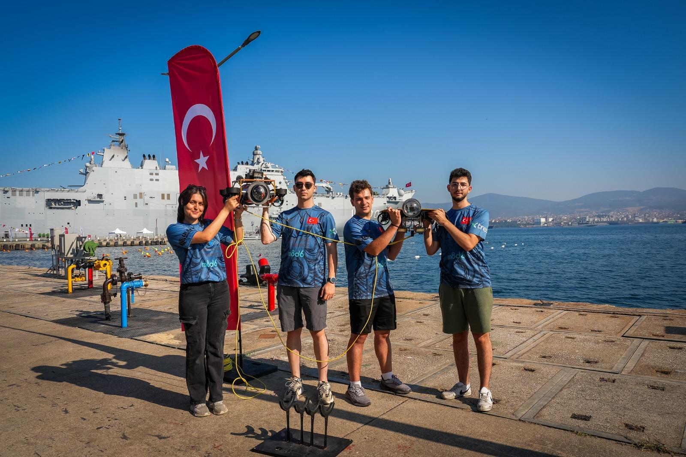

TAKIM &
PLANLAMA
Yeni Sezon, Yeni Hedefler
Yeni sezon çalışmalarına yarışma görevlerinin analizi, mevcut aracın yeteneklerinin değerlendirilmesi ve geliştirilmesi gereken alt sistemlerin belirlenmesiyle başladık. RoboSub görevleri için mekanik, elektronik ve yazılım ekiplerinin ortak çalışacağı bir geliştirme yol haritası oluşturduk.
